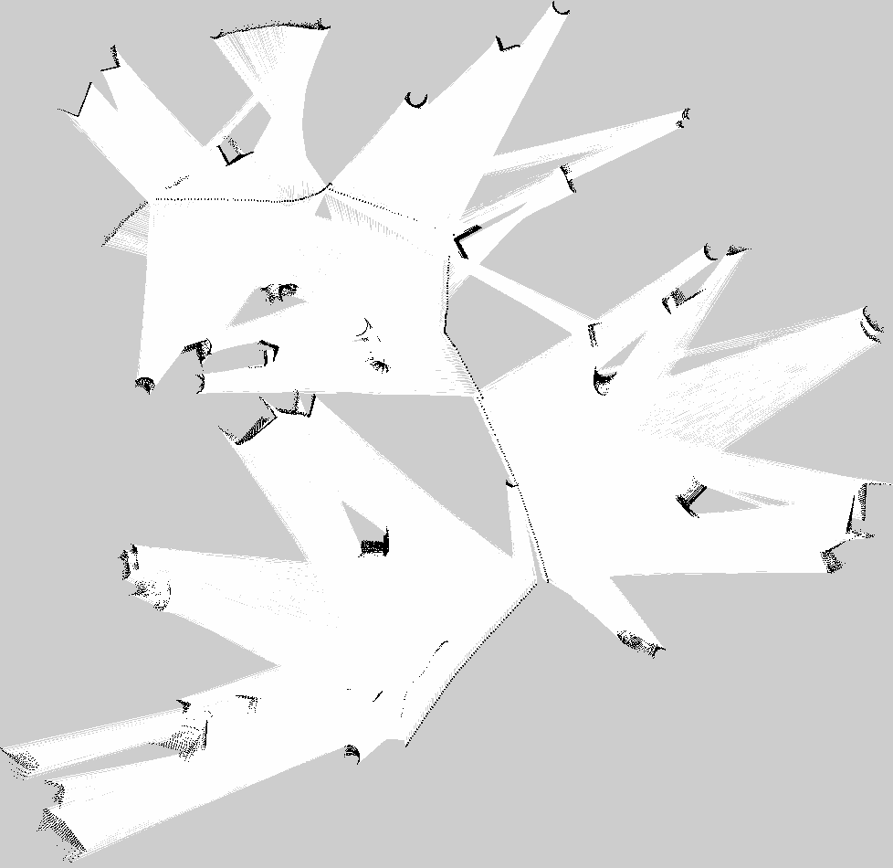
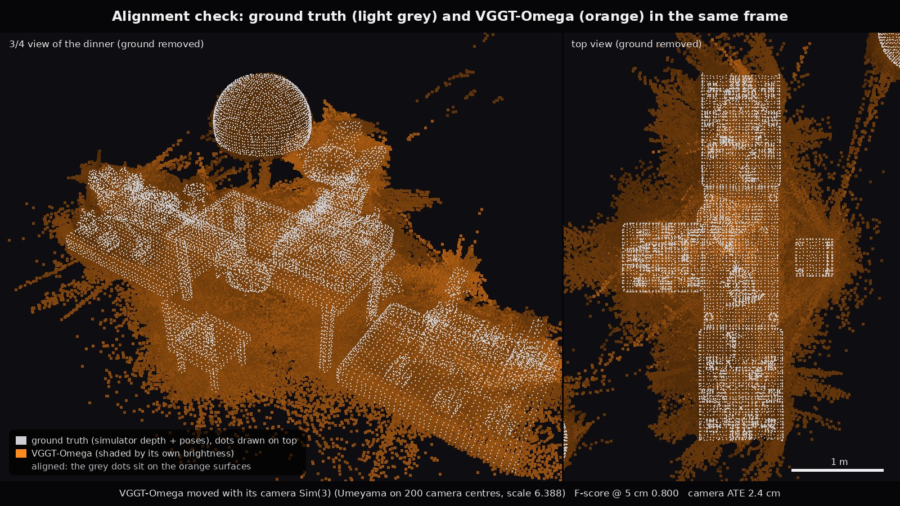

Mobile Manipulator Exploration & SLAM Challenge | CS 498 GC Fall 2025
Reference runs recorded by the course staff to show what complete Assignment 4 solutions look like. They are not student submissions, and no individual student results are published on this page.
Software: ROS 2 Jazzy, Gazebo Harmonic (gz sim), SLAM Toolbox; for the 3D extra credit, VGGT-Omega, VGGT, MUSt3R, CUT3R and TTT3R. All runs are scripted, recorded without a desktop session, and sped up where the caption says so.
A 20 s crane shot passes every fun object of the Mars base, then crossfades (0.5 s) into a 30 s orbit of the dinner table: 49.5 s in all, and one second of video is one second of simulated motion. Gazebo Harmonic, Mars gravity 3.711 m/s². Perseverance and Curiosity sit at the two ends of a 1.50 m x 0.80 m table on 0.30 m rock seats; a third rover sits at a long side on a 0.35 m seat, across from an empty chair.
Both turkeys move. One flies counter-clockwise above the table on an ellipse with 0.58 m and 0.28 m semi-axes, its body 1.32 to 1.48 m high as it bobs ±8 cm; it averages 0.40 m/s and laps every 9.67 s. The other runs clockwise under the table, between the legs, on an ellipse with 0.38 m and 0.08 m semi-axes and a 1.2 cm hop three times a second; it averages 0.33 m/s and laps every 5.03 s. Both paths are closed-form functions of simulation time, so the turkeys move the same way in every run and their ground-truth trajectories are known exactly.
Fun obstacles, all original models without logos or brand names: a Merlin-style engine on its display gantry (3.70 m tall), a quarter-scale landed first-stage booster (10.55 m) and a quarter-scale stainless upper stage on its landing mount (14.18 m), an Expanse-style corvette hovering on its drive plume over a 12.6 m landing pad, a landed Expanse-style pinnace with its airlock open, a tank farm, cargo crates, and the 5.79 m Happy Thanksgiving from Mars sign that the robot tour drives under.
Rover models: NASA's Mars 2020 Perseverance Gazebo model; Curiosity from theconstructcore/curiosity_mars_rover; the third rover from theunknowninfinite/Modeling-and-Simulation-of-Martian-Rover. Web video 960 x 540, 30 fps.
Clearpath Husky A200 base, UR3 arm and RH-P12-RN gripper in an empty Gazebo world. The base drives forward and then rotates in place on /cmd_vel (about 3-8 s and 8-13 s of the video), then the UR3 moves to two poses while the gripper closes and opens.
Left: RViz with the live SLAM Toolbox map, the laser scan (red), the A* path (bright green), the trail the robot has driven (cyan) and the numbered waypoints (amber: pending, orange: current, green: reached). Right: the Gazebo Sim GUI with a chase camera. Bottom: a HUD with the current waypoint, the distance to the goal, the speeds and the ground-truth arrival error, drawn from telemetry logged at 20 Hz during the run. Video 86.0 s at 2.5x simulation time.
A Clearpath Husky A200 with a UR3 arm runs the Part B stack: EKF fusion of wheel odometry and IMU, SLAM Toolbox (online async), and the course's custom A* global planner with a DWA local planner (0.85 m inflation). After a mapping spin in place (ground truth turned 6.98 rad, 400°), it drives 11 waypoints past the engine exhibit, the cargo crates, the landing pad, the upper stage, the tank farm, the booster and under the welcome sign, then turns to face the dinner table (heading error 0.002 rad) and the UR3 waves.
All 11 waypoints were reached: when the planner reported arrival, the Gazebo ground-truth position was 0.307 m from the goal on average (max 0.354 m, min 0.236 m; the planner stops within 0.35 m on its SLAM pose, and within 0.75 m counts as reached). The robot drove 68.5 m (ground truth) in 212.9 s of simulation time, mapping spin included.
Waypoint 11 sits 0.5 m west of its spot in the world's waypoint file, because that spot lies exactly at the planner's 0.85 m inflation radius and has no path. Both turkeys keep moving during the run (their driver updates both poses 50 times per simulated second); at this video scale only the flying turkey is easy to see. Web video 1280 x 720, 30 fps.
Left: Gazebo. Right: the SLAM Toolbox map in RViz with the robot's path. A custom A* + DWA planner drives 13 goals and then part of a second lap: 15 of 15 waypoints reached; at arrival the robot's Gazebo ground-truth position was 0.256 m from the goal on average (max 0.395 m); 387.3 s rosbag. Video at 4x speed.
Mars world with Mars gravity (3.721 m/s²), rocks and blocks.
The Husky + UR3 explores mars.sdf on a scripted loop: six legs of 40 s forward at 0.35 m/s, each followed by a 10.5 s turn at 0.5 rad/s (about 5 min in total, video at 10x speed). EKF sensor fusion and SLAM Toolbox (online async) build the occupancy grid shown in the next two panels.
Occupancy grid of the exploration loop, rendered from the /map messages in its rosbag (179 map updates): it grows from the first scan patch to the final map (white: free space, black: obstacle edges, gray: unknown). The final map is held for 2 s at the end.

Final SLAM Toolbox map, saved with the Nav2 map saver (map_saver_cli) at the end of the exploration loop: 978 x 950 cells at 0.05 m per cell, about 48.9 m x 47.5 m (white: free, black: obstacles, gray: unknown).
The same scripted two-lap route around a rock (69.2 m) driven twice in the Part B Mars world: clear on the left, dust storm on the right. Top row: the robot camera as seen; bottom row: the live SLAM Toolbox map with the ground-truth path (green), the SLAM pose estimate (blue, dashed) and the lidar returns that SLAM used (orange). Video 37.0 s, about 4x simulation time.
SLAM pose error grows from 0.060 m RMSE when clear to 0.636 m in the storm (maximum 1.47 m). The storm map holds 8.37 m² of phantom obstacles (occupied cells more than 0.25 m from any rock); only 37.3 % of its occupied cells lie within 0.25 m of a real rock (100 % when clear), and SLAM makes 58 map-to-odom corrections larger than 10 cm or 2°, against 28 when clear. The camera's RMS contrast drops from 0.112 to 0.047.
Storm model: Gazebo particle emitters upwind; lidar extinction of 0.06 per metre in both directions (visibility 65 m), dust backscatter returns and range noise; camera haze computed from the depth image, plus sensor noise. Gazebo Harmonic does not render the world's fog, so the visible haze comes from this camera model. The route is driven on the simulator's ground-truth pose, so SLAM only estimates the pose and never steers; one storm strength and one random seed. Web video 1280 x 720, 24 fps.
A timed lap of an 8-gate course around the Thanksgiving table, in a race copy of the earlier Mars Thanksgiving world (Mars gravity 3.711 m/s², ground friction 0.8, dust particles off). The Husky + UR3 steers on its SLAM Toolbox pose. Lap time 27.00 s of simulated time; 8 of 8 gates passed inside their radius on ground truth; 0 contacts; minimum footprint clearance 0.374 m; 12.05 m driven at 0.446 m/s on average.
The speed command is capped at 0.6 m/s; the ground-truth speed briefly reaches 0.676 m/s. The SLAM pose stays within 0.10 m RMSE of ground truth, while wheel odometry drifts to 3.95 m RMSE. The timer and splits count simulated seconds; the simulation ran slightly slower than real time, so the 27.00 s lap takes about 30 s of video.
On the published gate positions the middle gates run through two chairs, and the same steering law got stuck on the table after 3 of 8 gates. This lap uses adapted gates moved south of the table, with the same start, finish, number of gates and radii. Web video 41.4 s, 1280 x 720, 30 fps.
Static recording of world v3 (both turkeys parked, one above and one under the table): 200 RGB frames of 640 x 480 on one closed camera loop of radius 2.5 m around the table (15.76 m path). Each model received only the RGB frames, with no depth, poses, intrinsics or labels. Each reconstruction is then moved into the ground-truth frame with its own Sim(3), a Umeyama fit on its 200 camera centres, and compared with a ground-truth cloud built from the simulator's depth and poses (2 cm voxels; scores on a scene crop of 5 m radius around the table centre). The video films all six clouds with one orbiting virtual camera, with the same crop, voxel size and point size.
CUT3R's camera track drifts (ATE 48.4 cm), so its cloud visibly does not line up with ground truth. MUSt3R, CUT3R and TTT3R place parts of the sign and the background too close, which shows as floating sheets in their tiles. Black patches at the seat ends of the ground-truth tile are ground that no camera saw. Video 20 s, 1280 x 720, 30 fps; the render crop is 3.75 m around the table centre.
The VGGT-Omega cloud (1 cm voxels) after its Sim(3) alignment, with the ground-truth camera path as a white line and VGGT-Omega's own 200 predicted camera centres as orange dots, which follow the loop: camera ATE 2.4 cm RMSE (median 1.3 cm, max 6.9 cm).
Scene-crop scores: F-score 0.800 at 5 cm and 0.906 at 10 cm, median accuracy 2.8 cm, median completeness 1.0 cm (the accuracy and completeness in the video label are these medians). Video 20 s, 960 x 540, 30 fps.

Ground truth drawn as light-grey dots on top of the VGGT-Omega cloud (orange, shaded by its own brightness) with the ground below 15 cm removed, in a 3/4 view of the dinner and a top view with a 1 m scale bar; where the grey dots sit on orange surfaces, the reconstruction matches the true geometry.
The still draws the model in one orange hue instead of its own colours, because the grey rovers could not be told apart from the grey ground-truth dots. Still 1600 x 900.
| Model | Camera ATE (RMSE) | Median accuracy | Median completeness | F-score at 5 cm | F-score at 10 cm | F-score at 5 cm, objects only |
|---|---|---|---|---|---|---|
| VGGT-Omega (best) | 2.4 cm | 2.8 cm | 1.0 cm | 0.800 | 0.906 | 0.60 |
| VGGT | 3.3 cm | 7.8 cm | 1.7 cm | 0.524 | 0.710 | 0.32 |
| TTT3R | 7.8 cm | 32.5 cm | 3.1 cm | 0.342 | 0.530 | 0.20 |
| MUSt3R | 5.9 cm | 11.7 cm | 3.7 cm | 0.301 | 0.576 | 0.25 |
| CUT3R | 48.4 cm | 31.7 cm | 6.7 cm | 0.206 | 0.346 | 0.12 |
Best model by a rule fixed before the results (highest scene-crop F-score at 5 cm, ties broken by the lower camera ATE): VGGT-Omega. Accuracy is the median distance from the prediction to ground truth, completeness the median distance from ground truth to the prediction. 69 % of the scored ground-truth points lie on flat ground (at most 15 cm high), which makes the 5 cm F-score lenient to sideways errors. The column F-score at 5 cm, objects only, scores only the objects (points more than 15 cm high in both clouds): VGGT-Omega and VGGT keep the first two places and CUT3R the last, while MUSt3R and TTT3R swap, so read the middle of the table as a tie.
| Run | What ran | Result |
|---|---|---|
| Part B: waypoint mission (Mars Thanksgiving v3) | World v3 with both turkeys moving; EKF sensor fusion, SLAM Toolbox, custom A* + DWA planner | 11 of 11 waypoints reached; ground-truth distance to the goal at arrival 0.307 m mean (max 0.354 m); 68.5 m driven in 212.9 s of simulation time |
| Part B: waypoint mission (Mars world) | Mars world; EKF sensor fusion, SLAM Toolbox, custom A* + DWA planner | 15 of 15 waypoints reached; ground-truth distance to the goal at arrival 0.256 m mean (max 0.395 m); 387.3 s rosbag |
| Part B: exploration loop | mars.sdf; EKF sensor fusion, SLAM Toolbox (online async), scripted six-leg loop |
978 x 950 cell map at 0.05 m per cell; 179 /map updates; 354.3 s rosbag |
| Part B bonus: dust storm | The same route in a clear and a dust-storm Mars world (particle emitters, degraded lidar and camera); SLAM Toolbox | Trajectory error 0.060 m RMSE (clear) versus 0.636 m (storm); 0 versus 8.37 m² of phantom obstacles |
| Part B bonus: race lap | 8-gate course around the Thanksgiving table (adapted gates); steering on the SLAM Toolbox pose | 27.00 s lap in simulated time; 8 of 8 gates; 0 contacts; minimum clearance 0.374 m |
| Extra credit: 3D reconstruction (world v3) | VGGT-Omega, VGGT, MUSt3R, CUT3R and TTT3R on 200 RGB frames only; each cloud aligned to ground truth with its own Sim(3) | Best by the pre-registered rule: VGGT-Omega, F-score 0.800 at 5 cm (0.906 at 10 cm), camera ATE 2.4 cm RMSE |
Launch commands used for these runs, from a ROS 2 Jazzy workspace at ~/assignment4_ws. Before the Part B launch, add the workspace models/ and worlds/ folders to GZ_SIM_RESOURCE_PATH.
# Part A: Husky + UR3 + gripper simulation, headless server
ros2 launch husky_ur3_gazebo simulation.launch.py world:=empty.sdf \
rviz:=false headless:=true
# Part B: Mars world, SLAM Toolbox, map saver
export GZ_SIM_RESOURCE_PATH=~/assignment4_ws/models:~/assignment4_ws/worlds:$GZ_SIM_RESOURCE_PATH
ros2 launch husky_ur3_gazebo simulation.launch.py world:=mars.sdf \
rviz:=false headless:=true
ros2 launch slam_toolbox online_async_launch.py use_sim_time:=true \
slam_params_file:=$HOME/assignment4_ws/src/husky_ur3_manipulation/config/slam_params.yaml
ros2 run nav2_map_server map_saver_cli -f ~/assignment4_ws/maps/mars_slam_map \
--ros-args -p save_map_timeout:=10.0 -p use_sim_time:=true
Reference scripts (course staff, not distributed)
The Mars Thanksgiving world v3, its turkey driver and the 3D reconstruction and scoring scripts were made by the course staff for this reference solution and were not given to students, so the commands in this block do not run in a student workspace. They show how the runs above were made.
# Mars Thanksgiving world v3 and its turkey driver (Gazebo Harmonic); --headless runs the server only
bash ~/assignment4_ws/scripts/mars_thanksgiving_v3/run_mars_thanksgiving_v3_world.sh
bash ~/assignment4_ws/scripts/mars_thanksgiving_v3/run_mars_thanksgiving_v3_world.sh --headless
# The same world with the Husky + UR3 (spawned at x 0, y 0); start the turkey driver in a second terminal
export GZ_SIM_RESOURCE_PATH=~/assignment4_ws/models:~/assignment4_ws/worlds:$GZ_SIM_RESOURCE_PATH
ros2 launch husky_ur3_gazebo simulation.launch.py world:=$HOME/assignment4_ws/worlds/mars_thanksgiving_v3.world
python3 ~/assignment4_ws/scripts/mars_thanksgiving_v3/mars_thanksgiving_v3_turkey_driver.py \
--world mars_thanksgiving_v3 --rate 50
3D extra credit, in outline: each model (VGGT-Omega, VGGT, MUSt3R, CUT3R and TTT3R) runs in its own Python environment and receives only the 200 RGB frames. One scoring script fits a Sim(3) (Umeyama) to the 200 predicted camera centres and reports the camera ATE; the other compares the aligned cloud with a ground-truth cloud built from the simulator's depth and poses (F-score at 5 cm and 10 cm, median accuracy and completeness). Ground truth is read only by the two scoring scripts.
husky_ur3_gazebo, husky_ur3_description, the mars.sdf world and the custom ekf_sensor_fusion and path_planner nodes (package husky_ur3_manipulation) come from the course staff's ROS 2 Jazzy port of the course simulator. The public course fork, kulbir-ahluwalia/husky_ur3_simulator, is the ROS 1 Noetic version (branch noetic-devel): its packages are catkin packages with ROS 1 launch files, so the ROS 2 commands above do not run from it. The Mars Thanksgiving world v3 (world file, models and turkey driver) and the reconstruction and scoring scripts used for the 3D extra credit belong to the same course-staff setup and are not distributed; the world v3 commands above use that setup's layout under ~/assignment4_ws.
Fall 2025 quick start in 3 steps:
Assignment 4 (Fall 2025) combined mobile navigation with manipulation in Mars-themed Gazebo worlds.
The Fall 2025 handout also listed dust storms, uneven terrain and NASA rover data. None of these are in the linked worlds.
Mars-themed Gazebo Harmonic world (flat ground with rock-like obstacles) for the Husky+UR3 mobile manipulator.
Reference setup (not public)husky_ur3_gazebo and mars.sdf come from the course staff's ROS 2 Jazzy workspace, which is not public; the public husky_ur3_simulator is the ROS 1 Noetic version.
ros2 launch husky_ur3_gazebo simulation.launch.py world:=mars.sdf
Mapping launch from the Mars worlds + dual-robot SLAM explorer repo (Gazebo Classic via gazebo_ros). Not recommended in the final rubric (v11): reported missing mesh paths; use the Mars Thanksgiving World instead. The repo is a fork of itsyashk/ros2-dual-robot-slam-explorer.
ros2 launch mars_robots mapping.launch.py
Navigation launch from the Mars worlds + dual-robot SLAM explorer repo (Gazebo Classic via gazebo_ros). Not recommended in the final rubric (v11): reported missing mesh paths; use the Mars Thanksgiving World instead. The repo is a fork of itsyashk/ros2-dual-robot-slam-explorer.
ros2 launch mars_robots navigation.launch.py
# Clone the Mars worlds + dual-robot SLAM explorer repository
# (fork of itsyashk/ros2-dual-robot-slam-explorer; rubric v11 marks it not recommended
# because of missing mesh paths - use the Mars Thanksgiving World instead)
cd ~/ros2_ws/src
git clone https://github.com/kulbir-ahluwalia/ros2-dual-robot-slam-explorer.git
# GazeboMarsRover2 is a ROS 1 (catkin) package: colcon under ROS 2 does not build it
git clone https://github.com/LRCJ/GazeboMarsRover2.git
# Install dependencies
sudo apt-get update
sudo apt install ros-${ROS_DISTRO}-ros-gz
# Build the workspace
cd ~/ros2_ws
colcon build
source install/setup.bash
Create your own Mars exploration scenario by modifying world files:
Fall 2025 handout text (not a runnable example)The models this world includes (mars_sky, jezero_crater_terrain, mars_rock_sample) are not in any of the repositories linked on this page.
<?xml version="1.0"?>
<sdf version="1.6">
<world name="mars_exploration">
<!-- Mars sky and lighting -->
<include>
<uri>model://mars_sky</uri>
</include>
<!-- Jezero Crater terrain -->
<include>
<uri>model://jezero_crater_terrain</uri>
<pose>0 0 0 0 0 0</pose>
</include>
<!-- Add rock samples for collection -->
<include>
<uri>model://mars_rock_sample</uri>
<pose>5 5 0.5 0 0 0</pose>
<name>sample_01</name>
</include>
</world>
</sdf>
Configure ROS2 Jazzy/Humble with Gazebo Harmonic
source /opt/ros/jazzy/setup.bash
mkdir -p ~/assignment4_ws/src && cd ~/assignment4_ws
Get Husky UR3 simulator and Mars worlds
cd ~/assignment4_ws/src
git clone https://github.com/kulbir-ahluwalia/husky_ur3_simulator.git
# optional, not recommended in rubric v11 (missing meshes; fork of itsyashk/ros2-dual-robot-slam-explorer)
git clone https://github.com/kulbir-ahluwalia/ros2-dual-robot-slam-explorer.git
husky_ur3_simulator is the ROS 1 Noetic reference (branch noetic-devel): it holds catkin packages with ROS 1 launch files, not ROS 2 packages. The ROS 2 Jazzy setup used for the reference solution, including the launch commands in Step 5, is described in the reference solution section.
Install required ROS2 packages
cd ~/assignment4_ws
sudo rosdep init 2>/dev/null || true
rosdep update
rosdep install --from-paths src --ignore-src -r -y
pip3 install transforms3d
Compile all packages
colcon build
source install/setup.bash
Start the complete simulation
Reference setup (not public)husky_ur3_gazebo and mars.sdf come from the course staff's ROS 2 Jazzy workspace, which is not public; the public husky_ur3_simulator is the ROS 1 Noetic version.
# Launch Mars world with Husky robot
ros2 launch husky_ur3_gazebo simulation.launch.py world:=mars.sdf
# In a new terminal, launch SLAM
ros2 launch slam_toolbox online_async_launch.py use_sim_time:=true
# Start teleoperation (optional)
ros2 run teleop_twist_keyboard teleop_twist_keyboard
Make sure your controllers.yaml includes the command_interface parameter:
base_controller:
ros__parameters:
type: diff_drive_controller/DiffDriveController
command_interface: "velocity" # Critical for movement!
left_wheel_names: ["front_left_wheel", "rear_left_wheel"]
right_wheel_names: ["front_right_wheel", "rear_right_wheel"]
Part B covered sensor fusion (EKF), path planning with obstacle avoidance, 2D SLAM, full-system integration, and a technical report. The Fall 2025 pages listed two different per-item point splits for this part and no rubric file from that time survives, so only the Gradescope total is given here.
Total: 75 points (Gradescope), plus the Mars Challenge bonus (+10 points) below. Part B became optional extra credit on December 7, 2025; rubric v11 (December 8, 2025) offers up to +35 bonus points.
Complete SLAM during a simulated Mars dust storm with reduced visibility!
Fall 2025 handout text (not a runnable command)# Enable dust storm mode
ros2 param set /mars_environment enable_dust_storm true
ros2 param set /mars_environment dust_density 0.7
Fall 2025 handout command (no /mars_environment node exists in the linked repositories). Reference solution: the same route driven in a clear and a dust-storm Mars world (particle emitters plus simulated lidar and camera degradation) gave a SLAM Toolbox trajectory error of 0.060 m RMSE (clear) versus 0.636 m (storm), with 0 versus 8.37 m² of phantom obstacles.
| Metric | Earth Performance | Mars Challenge | Points |
|---|---|---|---|
| Map Completeness | >95% | >90% in Mars terrain | 15 |
| Localization Error | <10cm | <20cm with reduced traction | 10 |
| Loop Closure Success | 100% | >80% in dust conditions | 10 |
| Sample Collection | N/A | 5+ Mars rocks collected | 15 |
Part B is graded out of 75 points (rubric above); the Points column in this table is not additional to that total.
command_interface: "velocity" to your controllers.yaml file
base_controller:
ros__parameters:
command_interface: "velocity" # Add this line!
export LIBGL_ALWAYS_SOFTWARE=1
export MESA_GL_VERSION_OVERRIDE=3.3
ros2 launch husky_ur3_gazebo simulation.launch.py
# Increase odometry uncertainty
ros2 param set /husky_controller odom_covariance_xy 0.1
ros2 param set /ekf_filter imu_weight 0.8
# Mars gravity compensation
ros2 param set /ur3_controller gravity_compensation 3.71
ros2 param set /ur3_controller pid_p 0.6
Vis/* changes made at runtime with ros2 param set, so the safe route is to pass them as launch arguments and restart the node:
# Pass RTAB-Map Vis/* parameters at launch (args is the rtabmap_launch argument for RTAB-Map parameters):
# fewer inliers needed (default 20), GFTT/BRIEF features (type 6), up to 2000 features (default 1000).
# Append your camera remaps (rgb_topic:=, depth_topic:=, camera_info_topic:=) and use_sim_time:=true,
# and restart the node after any change.
ros2 launch rtabmap_launch rtabmap.launch.py args:="--Vis/MinInliers 10 --Vis/FeatureType 6 --Vis/MaxFeatures 2000"
# In your launch file, increase timeout
transform_timeout = 5.0 # Increase from default 1.0
Recorded by the course staff, not student submissions. They are at the top of this page.
ros2 topic pub --once /gripper_controller/commands std_msgs/msg/Float64MultiArray "{data: [0.0]}"
ros2 topic pub --once /gripper_controller/commands std_msgs/msg/Float64MultiArray "{data: [1.0]}"
Values used in the reference solution (RH-P12-RN gripper): 0.0 open, 1.0 closed.
Check if GPU acceleration is working
glxinfo | grep "OpenGL renderer"
Verify controllers are loaded
ros2 control list_controllers
During Fall 2025, students were invited to record a 2-minute highlight video of their best Mars navigation, including the autonomous sample collection sequence, and to submit it through Gradescope with the hashtag #MarsCS498GC.
Individual student submissions and results are not published on this page. To see what complete runs look like, watch the reference solution at the top of this page.
"I couldn't sleep last night because I was so excited SLAMing on MARS!!" - a CS498GC student
Fall 2025 archive.
CS498GC Mobile Robotics | Fall 2025 | University of Illinois at Urbana-Champaign
Professor Girish Chowdhary | TA: Kulbir Singh Ahluwalia